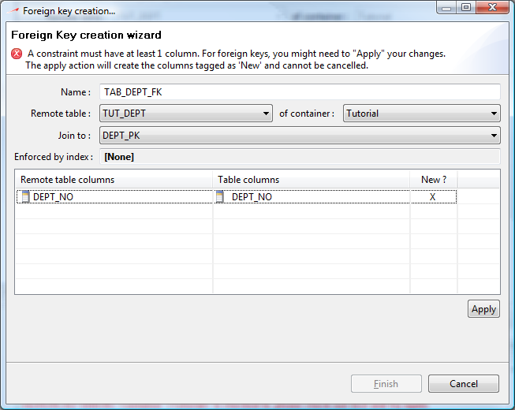

You can create a table's foreign key by 4 ways :
From any table by right-clicking and selecting the Create foreign key menu item
From a table by selecting it in the version navigator and click the Create foreign key icon from the toolbar
From the Foreign Keys typed node of a table by right-clicking it and selecting the Create foreign key menu item
From a diagram by selecting the Create foreign key creation tool from the diagram palette and then clicking the constrained table and then clicking the remote table of this diagram
The foreign keys editor looks like this :

You can edit the key name from the name text field.
You can define the joined key (foreign key's remote constraint) by selecting the remote table and the join to unique key. Note that when creating the foreign key from a diagram, those information will be automatically filled in based on the selection you made with the foreign key creation tool.
The Enforced by index is a non-editable field and allows you to watch whether an existing index / constraint currently enforces your foreign key. When no index can be found to enforce your foreign key, a dialog will be displayed after the foreign key creation wizard finishes and will prompt you to create one.
You must define the columns matching between your remote table and the current table from the columns listing. NeXtep designer will suppose the columns will have the same name in the remote and current table. When the remote column name cannot be found in the current table, the New column will be checked. This means that, if you apply, a column identical to the remote table column will be created in your table. Please note that this action is not reversible and that, once created, you will have to manually delete the column if you cancel the foreign key creation.
You are able to select other existing table columns through the combo box which appears when you click in the Table columns column of a specific foreign key column.